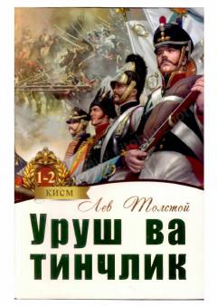

UVNapoleon urushlari davridagi Rossiya jamiyati va inson taqdirlari haqidagi buyuk roman.
Lev Tolstoyning ushbu mashhur romani Napoleon urushlari davridagi Rossiya jamiyatining hayotini keng qamrovli tasvirlaydi. Asar inson taqdiri, muhabbat, falsafiy izlanishlar va tarixiy voqealar uyg'unligini o'zida mujassam etgan jahon adabiyotining durdona asaridir.